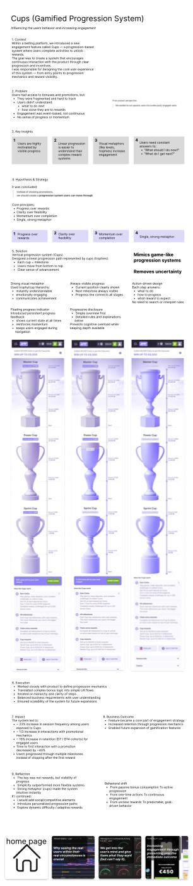

Overview
Design problem
Users were participating, but the experience did not clearly show progress, momentum, or what came next. That limited sustained engagement.
Case 03
Increasing engagement through a progression system people could understand at a glance.
This concept introduced a clearer sense of progress and reward, so users could feel momentum instead of uncertainty.

Overview
Users were participating, but the experience did not clearly show progress, momentum, or what came next. That limited sustained engagement.
Opportunity
The system needed to communicate advancement in a way that reduced ambiguity and made the reward path feel concrete.
Process
I explored a trophy-based metaphor that would work both as status communication and as a lightweight emotional motivator. The design had to feel clear, not childish.
Artifacts
Solution
The design frames progress as a sequence of attainable steps instead of a hidden system operating in the background.
Impact
Clearer advancement helps users understand the value of staying engaged and returning to complete the next milestone.
Takeaway
When feedback is visible and trustworthy, motivation becomes easier to sustain without overloading the interface.